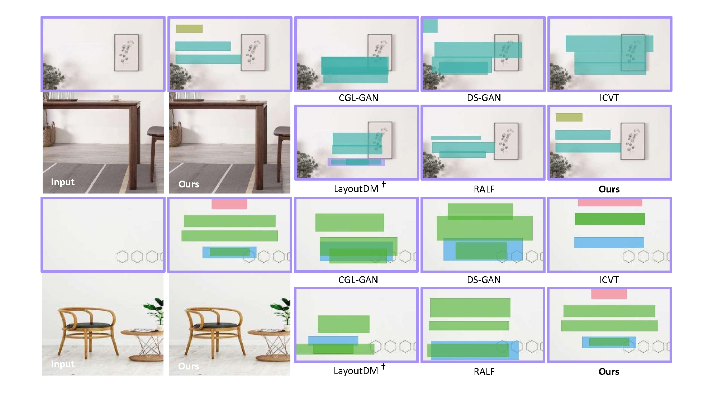
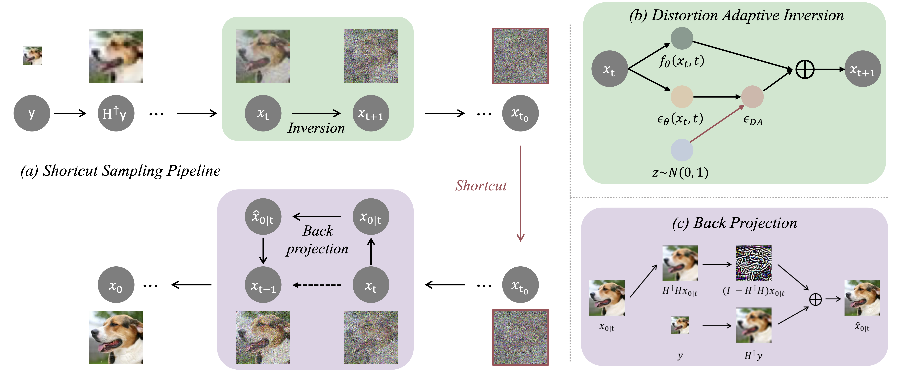

|
Gongye Liu (刘功烨) Hi, I'm Gongye Liu. I am currently a third-year graduate student at Tsinghua University, supervised by Professor Yujiu Yang. Prior to that, I received my B.Eng degree(2018-2022) in Beihang University. My current research focus on image and video generation. I'm particularly interested in projects that spark new ideas or create visually appealing contents for people. |
|
Publications & Preprints |

|
Gongye Liu, Menghan Xia, Yong Zhang, Haoxin Chen, Jinbo Xing, Yibo Wang, Xintao Wang, Ying Shan, Yujiu Yang SIGGRAPH Asia, 2024 (Journal Track) Reference based Stylized Text-to-Image/Video Generation with Limited Stylized Data. |

|
Jinbo Xing, Menghan Xia, Yong Zhang, Haoxin Chen, Wangbo Yu, Hanyuan Liu, Gongye Liu, Xintao Wang, Ying Shan, Tien-Tsin Wong ECCV, 2024 (Oral Presentation) An Open-Domain High-Quality Image-to-Video Foundation Model. |
|  |
Yu Li*, Yifan Chen, Gongye Liu, Jie Wu, Yujiu Yang arXiv, 2024 Utilizing DiT Architecture to Generate Layouts with Content and Graphic Balance. |
|  |
Gongye Liu, Haoze Sun, Jiayi Li, Fei Yin, Yujiu Yang IJCAI, 2024 Zero-shot Image Restoration based on Diffusion |
Internship |
|
2024.04—2024.08: Hunyuan Video Generation Center, Tencent |
|
|
2023.07—2024.03: AI Lab CVC, Tencent, Research Intern, supervised by Dr. Menghan Xia |